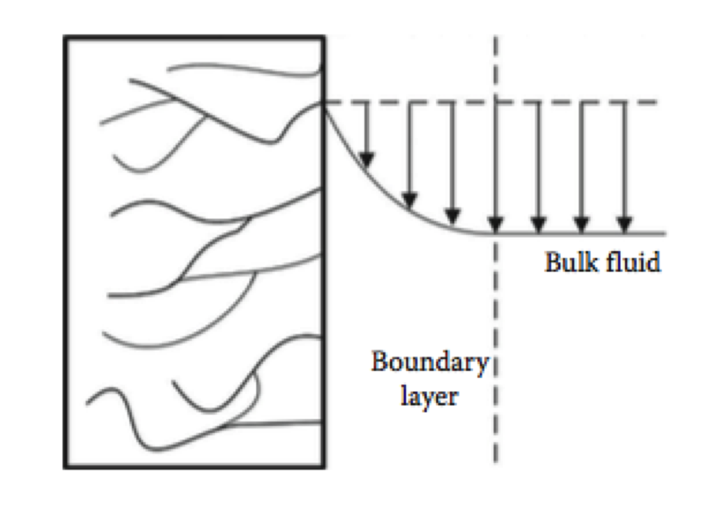

Chapter 4 Introduction to Heterogeneous Catalysis
The chemical, petrochemical, and petroleum industries rely heavily on catalytic processing operations. For this reason, chemical engineers must be aware of the fundamental and applied aspects of catalysis. In modern terms:
A catalyst is a substance that affects the rate or the direction of a chemical reaction but is not appreciably consumed in the process.
There are three crucial aspects of the definition. First, a catalyst may increase or decrease the reaction rate. Second, a catalyst may influence the direction or selectivity of a reaction. Third, the amount of catalyst consumed by the reaction is negligible compared to the consumption of reactants. (Hill and Root 2014)
One of the main characteristics of catalysts is that the pores’ walls in a typical industrial catalyst contain a great deal of surface area. For example, there may be from 10 to 1000 m\(^{2}\) of surface area in the interior of a single gram of catalyst particles. The internal surface area of a porous catalyst can be measured by adsorbing N\(_{2}\) onto the pores’ walls and determining the amount of N\(_{2}\) required to exactly cover the surface. This method is called the BET surface area and is usually reported as m\(^{2}\)/g of catalyst. (Roberts 2009)
Another important parameter is the pore volume per gram of catalyst, denoted \(V_{p}\). Typically units are m\(^{3}\)/g of catalyst. There are three different densities use in the characterization of a heterogeneous catalyst.
- Particle density (\(\rho_{p}\)) which is defined as the weight of catalyst per unit geometric volume of the particle.
- Skeletal density (\(\rho_{s}\)) which is the density of the solid material of which the catalyst particle is comprised.
- Bulk density (\(\rho_{B}\)) which is defined as the weight of catalyst per unit geometrical volume of the reactor.
The pore volume, the skeletal density, and the particle density are related: \[\begin{align*} V_{p} \left( \frac{\text{volume pores}}{\text{weight catalyst}} \right) + \frac{1}{\rho_{s}}\left( \frac{\text{volume solids}}{\text{weight catalyst}} \right) & = \frac{1}{\rho_{p}}\left( \frac{\text{volume catalyst}}{\text{weight catalyst}} \right) \\ V_{p} & = \frac{1}{\rho_{p}} - \frac{1}{\rho_{s}} \end{align*}\]
The porosity of the catalyst \(\varepsilon\) is defined as the volume of the pores divided by the geometric volume of the catalyst particle. This parameter is related to the pore volume and the particle and skeletal densities: \[\begin{equation*} \varepsilon = V_{p}\, \rho_{p} = 1 - \left(\frac{\rho_{p}}{\rho_{s}}\right) \end{equation*}\]
The bulk density is related to the particle density and the interstitial volume of the catalyst bed. The interstitial volume \(\varepsilon_{i}\) is defined as \[\begin{equation*} \varepsilon_{i} = \frac{\text{volume of ``free space'' between catalyst particles in a vessel}}{\text{geometrical volume of vessel}} \end{equation*}\] This definition leads to \[\begin{equation} \rho_{b} = \rho_{p}\left(1 - \varepsilon_{i} \right) \end{equation}\]
The volume of ‘’free space’’ between catalyst particles does not include the volume of the pores. (Roberts 2009)
Catalytic reactions are often classified as homogeneous or heterogeneous. Homogeneous catalysis occurs when the catalyst and the reactants are present in the same fluid phase. Reactions on a gas-liquid or two liquid phases are also generally considered to fall in this category.
The term heterogeneous catalysis is usually restricted to catalytic phenomena involving a solid catalyst and reactants in a gas or liquid phase. Some commercially critical catalytic processes are listed in Table 4.1.
| Type of reaction | Reactants | Catalyst | Products |
|---|---|---|---|
| Ammonia synthesis | N\(_2\) + H\(_2\) | Iron oxide (Fe\(_3\)O\(_4\)) promoted with Al\(_2\)O\(_3\) and K\(_2\)O | NH\(_3\) |
| Ammonia oxidation | NH\(_3\) + O\(_2\) | Pt-Rh | NO used in the manufacture of HNO\(_3\) |
| Oxidation of sulfur dioxide | SO\(_2\) + O\(_2\) | V\(_2\)O\(_5\) or Pt | SO\(_3\) used in the manufacture of oleum and sulfuric acid |
| Hydrogenation of fats and edible oils | Unsaturated oil + H\(_2\) | Ni | Saturated oil or fat |
| Cracking | Various petroleum fractions | Combinations of silica, alumina, and molecular sieves | Wide range of compounds |
| Polymerization | Ethylene | Aluminum alkyls and TiCl\(_4\), MoO\(_3\), or CrO\(_3\) on alumina | Polyethylene |
| Dehydrogenation | Ethylbenzene | Iron oxide or chromia alumina | Styrene |
4.1 Reaction rate expressions for heterogeneous catalytic reactions
When a heterogeneous catalytic reaction occurs, several physical and chemical processes must take place in a proper sequence. Many investigators have broken down the steps that occur on a molecular scale as follows: (see Figure 4.1).
Figure 4.1: Schematic representation of heterogeneous catalytic reaction on a porous catalyst (Hill and Root 2014)
The rates of the various steps depend on several factors and the concentration profiles of the reactant and product species. (Hill and Root 2014)
Step 1: Transport of Reactants and energy to the Catalyst Surface
Despite the catalyst geometry, when a fluid flows over the catalyst surface, there will always be a boundary layer of some type (Figure~??, with gradients of velocity, temperature, and concentration. The magnitude of those gradients depends on the ratio between the force of the bulk flow and diffusion phenomenon. In practice, the mass transfer rate is described by a mass transfer coefficient, which in most cases is determined from the empirical correlation that includes the local condition of flow, temperature, and concentration.

The mass transfer rate is equal to diffusion rates at the solid surface, which for a constant-density fluid, Fick’s law could be expressed as: \[\begin{equation} N_{A} = - \mathcal{D}_{A} \left. \frac{\partial C_{A}}{\partial z} \right|_{z=0} \tag{4.1} \end{equation}\] where \(N_{A}\) is the molar flux of species \(A\) and \(\mathcal{D}_{A}\) is the bulk diffusion coefficient (diffusivity) of species \(A\)
On the other hand, the mass transfer rate across the boundary layer is typically expressed in terms of a mass transfer coefficient and (for a constant-density fluid) an overall driving force equals the concentration difference.
\[\begin{equation} N_{A} = k_{m} \left( C_{A,S} - C_{A,f} \right) \tag{4.2} \end{equation}\] where subscript \(f\) and \(S\) denote the bulk fluid- and solid-phase mole fractions, respectively.
By definition, (4.1) and (4.2) must be equal, therefore \[\begin{equation} - \mathcal{D}_{A} \left. \frac{\partial C_{A}}{\partial z} \right|_{z=0} = k_{m} \left( C_{A,S} - C_{A,f} \right) \tag{4.3} \end{equation}\]
We can define both coordinate and mole fraction in dimensionless terms \[\begin{gather*} z^{*} = \frac{z}{L_{c}}, \quad C^{*} = \left(\frac{C_{A} - C_{A,f}}{C_{A,S} - C_{A,f}}\right), \text{ and } \\ \frac{\partial C^{*}}{\partial z} = \left(\frac{1}{C_{A,S} - C_{A,f}} \right)\,\frac{\partial C_A}{\partial z} \end{gather*}\]
Combining these expressions with (4.3) leads to \[\begin{gather*} - \left. \frac{\partial C_{A}}{\partial z} \right|_{z=0} \, \frac{1}{\left( C_{A,S} - C_{A,f} \right)} = \frac{k_{m} }{\mathcal{D}_{A}} \\ - \frac{\partial C_{A}^{*}}{\partial z} = \frac{k_{m}}{\mathcal{D}_{A}}\\ \partial z = \partial z^{*} \, L_{c} \Rightarrow - \frac{\partial C^{*}}{\partial z^{*}} = \frac{k_{m}\,L_{c}}{\mathcal{D}_{A}} \end{gather*}\]
It is seen that the dimensionless concentration gradient at the surface is equal to the Sherwood Number, denoted Sh. \[\begin{equation*} \text{Sherwood number} = N_\text{Sh} = \frac{k_m\,L_{c}}{\mathcal{D}} \end{equation*}\] where \(L_{c}\) is referred to the characteristic length dimension of the system.
For example, in the case of spheric catalyst particle \(L_{c}\) must be the equivalent diameter of this particle, which means the sphere’s diameter having the same external surface area as the particle. The mass transfer through the boundary layer depends on the Reynolds and Schmidt numbers, and this functional dependence is often an empirical relationship.
The heat transfer through the boundary layer follows the same behavior as that mass transfer phenomenon. Thus, the rate of heat transfer is given by the speed of conduction at the surface: \[\begin{equation} q'' = - k \left. \frac{\partial T}{\partial z} \right|_{z=0} \tag{4.4} \end{equation}\] The rate of heat transfer is also defined in terms of an overall driving force and a heat transfer coefficient: \[\begin{equation} q'' = h_{f} \left( T_{S} - T_{f} \right) \tag{4.5} \end{equation}\] where \(h_f\) is the heat transfer coefficient and it is also correlated with respect to the Reynolds number by means of a \(j\)-factor expression: (Froment, Bischoff, and De Wilde 2011) \[\begin{equation} h_f = j_H\,c_P\,G\,N_\text{Pr}^{-2/3} \quad \text{and } \quad j_H = f(N_\text{Re}) \end{equation}\]
A dimensionless temperature and distance are defined \[\begin{equation*} z^{*} = \frac{z}{L_{c}}, \quad \theta = \left(\frac{T - T_{f}}{T_{S} - T_{f}}\right) \end{equation*}\] Combining these expressions with @ref{eq:heatdl} and @ref{eq:heattransfer} gives \[\begin{equation} - \left.\frac{\partial \theta}{\partial z}\right|_{z=0} = \frac{h_{f}\, L_{c}}{k} = \text{Nu} \end{equation}\] where Nu is known as Nusselt Number, whose magnitude governs the hear transfer rate and depends on the Reynolds and Prandtl numbers.
The equations of both the Nusselt and Sherwood numbers depend on local conditions, including catalyst shape and flow regime. For this reason, there are several definitions of mass transfer coefficients that may be considered appropriate for use.
For example, the external mass transfer in packed bed reactors, the most convenient mathematical form for correlating mass transfer data is in terms of the well-known Chilton-Colburn \(j_D\) factor: \[\begin{equation} j_D = \frac{k_m\,\rho}{G} N_\text{Sc}^{2/3} \end{equation}\] where \(G\) the mass velocity is based on the reactor’s total (superficial) cross-sectional area. This mass transfer factor \(j_D\) has several equations that have been proposed by many investigators.
| Fluid | Range of \(N_{\text{Re}}\) and/or \(\varepsilon_{B}\) where applicable}} | Correlation |
|---|---|---|
| Gas | \(3 < N_{\text{Re}} < 2000\) | \(\displaystyle \varepsilon_{B}\,j_{D} = \frac{0.357}{N_{\text{Re}^{0.359}}}\) |
| Liquid | \(55 < N_{\text{Re}} < 1500\) | \(\displaystyle \varepsilon_{B}\,j_{D} = \frac{0.250}{N_{\text{Re}^{0.31}}}\) |
| \(\displaystyle 0.35 < \varepsilon_{B} < 0.75 \\ 0.0016 < N_{\text{Re}} < 55\) | \(\displaystyle \varepsilon_{B}\,j_{D} = \frac{1.09}{N_{\text{Re}^{2/3}}}\) |
When the reactant reacts on active center at the surface of a solid. It is convenient for the present to define a rate based on the interfacial surface area, and if it is first order: \[\begin{equation*} r_{A,S} = - k_{r} C_{A,S} \end{equation*}\] where \(r_{A,S}\) is the rate of reaction of \(A\) at surface, \(k_{r}\) is the rate coefficient for the reaction, and \(C_{A,S}\) the concentration of \(A\) at the interface.
For steady state, the reaction rate and diffusion rate must be equal: \[\begin{equation*} r_{A,S} = N_{A} = r_{A} \end{equation*}\] Thus, \[\begin{align} k_{m} \left(C_{A,S} - C_{A,f} \right) & = - k_{r} C_{A,S} \\ \notag k_{m} C_{A,S} -k_{m} C_{A,f} & = - k_{r} C_{A,S} \\ \notag C_{A,S} & = \frac{k_{m}}{k_{m} + k_{r}}\,C_{A,f} \end{align}\]
and \[\begin{align} \left(- r_{A,S}\right) & = \left(\frac{1}{k_{m}} + \frac{1}{k_{r}} \right)^{-1} C_{A,f} \\ \notag & = k_{o} C_{A,f} \end{align}\] where an ‘’overall’’ rate coefficient can be defined as \[\begin{equation} \frac{1}{k_{o}}=\frac{1}{k_{m}} + \frac{1}{k_{r}} \tag{4.6} \end{equation}\]
There are two limiting cases: When the mass transfer step if much faster than the surface reaction step \(k_{m} \gg k_{r}\) and (4.6) gives \(k_{o} \cong k_{r}\) also \(C_{A,S} \cong C_{A,f}\), and so the reactant concentration at the surface is the same as that measured in the bulk. The observed rate corresponds to the actual reaction, which is called reaction controlling.
The other limit is that almost instantaneous reaction, \(k_{r} \gg k_{m}\) and (4.6) gives \(k_{o} \cong k_{m}\) also \(C_{A,S} \cong 0\) and the observed rate corresponds to the fluid-phase mass transfer step, not to the reaction \(-\) this is termed diffusion controlling. (Froment, Bischoff, and De Wilde 2011)
WIP